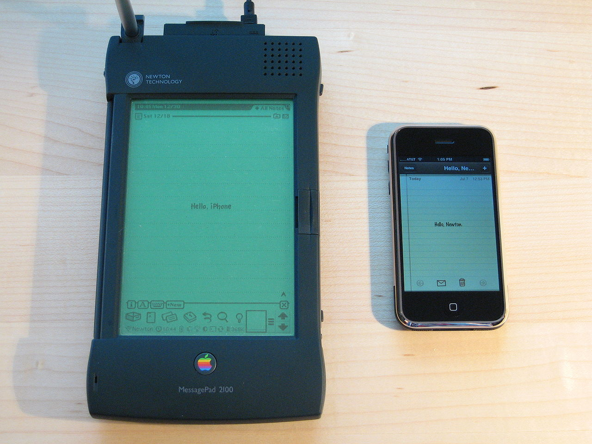
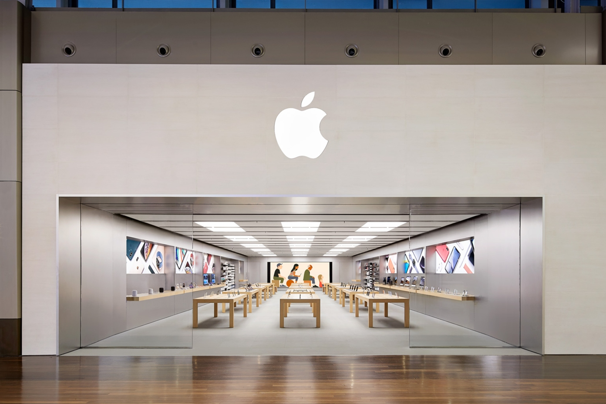
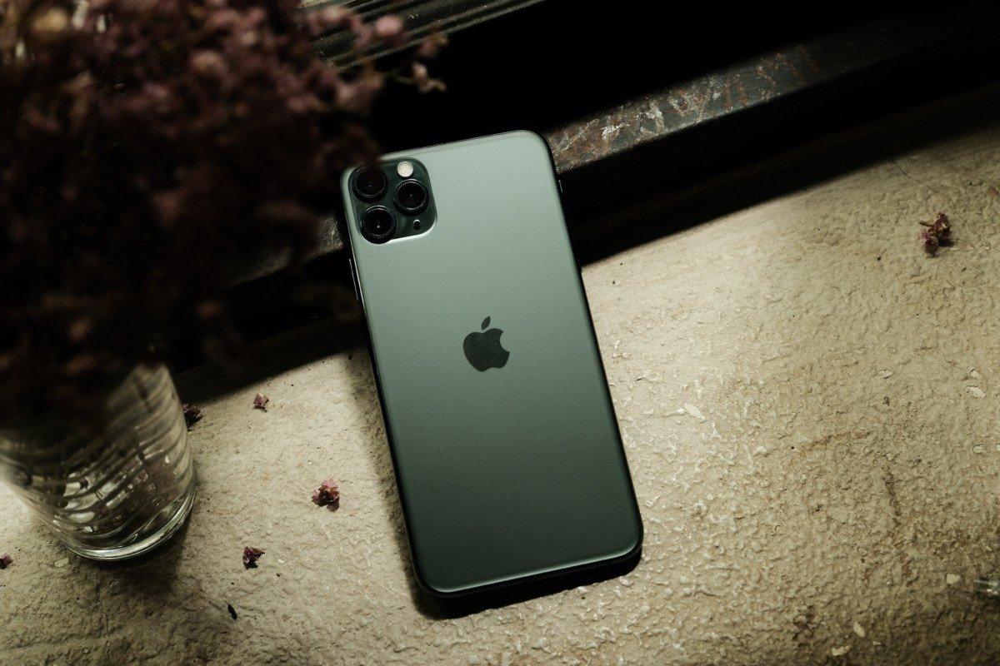
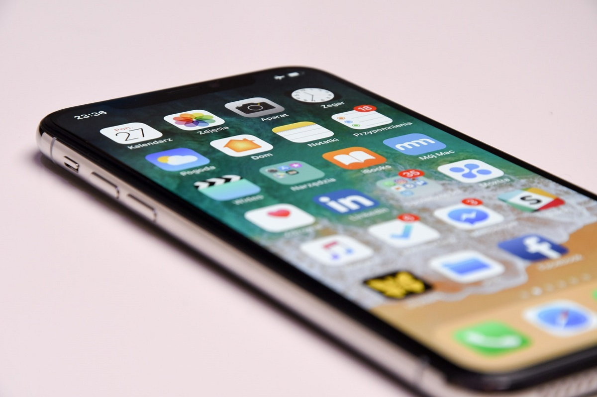
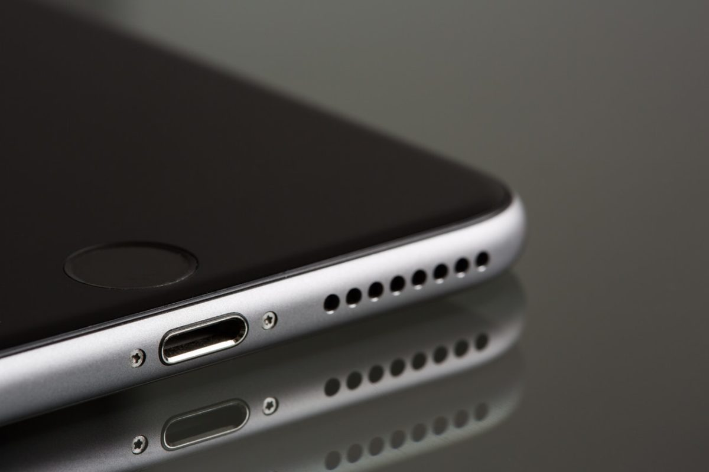
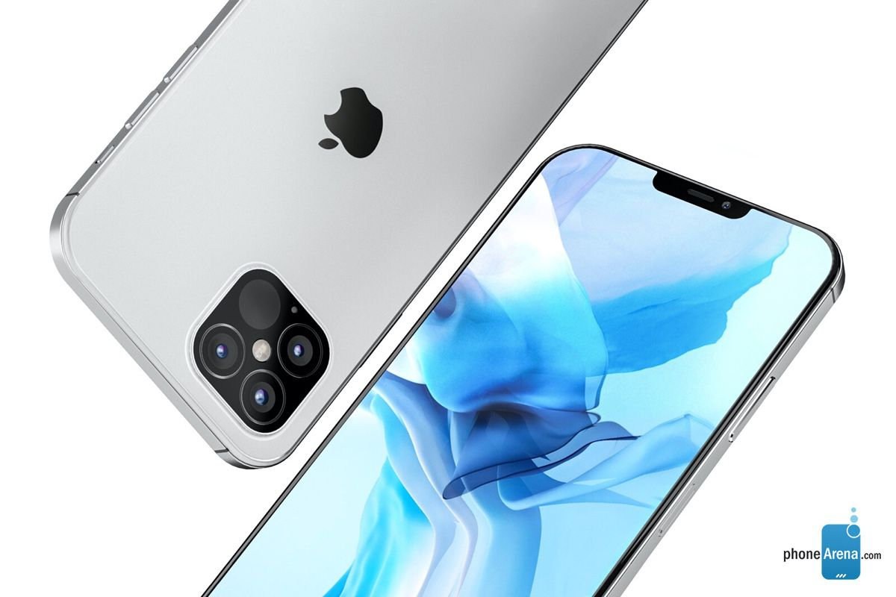
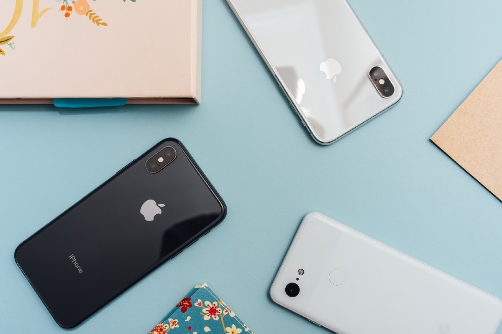

Sommaire :
Définition
L'iPhone est une gamme de smartphone commercialisée par l'entreprise multinationale américaine Apple depuis le 29 juin 2007.
Les modèles de la gamme, dont l'interface s'appuie sur écran tactile capacitif multipoint, disposent d'un appareil photo qui fonctionne également comme une caméra, d'un système de géolocalisation intégré permettant une localisation en quelques secondes grâce aux systèmes A-GPS et GLONASS ainsi que d'un logiciel de cartographie numérique inclus, d'un iPod intégré qui permet d'écouter et de télécharger de la musique via la plateforme de téléchargement iTunes Store et le service de streaming Apple Music, de clients Internet (Safari pour naviguer sur le Web, ou Mail pour envoyer/consulter son courrier électronique), d'applications bureautiques et de fonctions élémentaires telles que les SMS et les MMS ; ils disposent aussi de la messagerie vocale visuelle comme mode d'accès à la messagerie vocale et de l'App Store, la plateforme de téléchargement d'Apple qui permet de télécharger des applications, allant des jeux aux utilitaires en passant par la télévision et la presse électronique. Si l'iPhone n'est pas historiquement le premier smartphone, il reste l'appareil qui a transformé le marché des téléphones intelligents en en faisant des produits de consommation de masse.

Historique
Le développement de l’iPhone a débuté par la recherche d’ingénieurs sous la direction du CEO d’Apple Steve Jobs travaillant sur les écrans tactiles. Les étapes de recherche et développement engagées par la société se déroulèrent notamment à Paris, et furent menées par une cellule d’Apple sous la tutelle de l’ingénieur français Jean-Marie Hullot18,19. Apple a par la suite créé le dispositif au cours d’une collaboration avec AT&T Mobility-Cingular Wireless, à un coût de développement estimé de 150 millions de dollars sur plus de trente mois. Apple a rejeté l’approche qui avait amené le Motorola ROKR E1. Au lieu de cela, Cingular a donné la liberté d’Apple pour développer l’iPhone et les logiciels en interne.
Jobs a dévoilé l’iPhone au public le 9 janvier 2007. Apple a été tenu de déposer les permis d’exploitation auprès de la FCC, mais puisque de tels dépôts sont à la disposition du public, l’annonce a été faite quelques mois avant que l’iPhone ait reçu l’agrément. L’iPhone a été mis en vente aux États-Unis le 29 juin 2007. La première version de l’iPhone a été rendue disponible au Royaume-Uni, en France et en Allemagne en janvier 2008, et en Irlande et en Autriche au printemps 2008. Le 11 juillet 2008, Apple a lancé l’iPhone 3G dans vingt-deux pays20. Apple a depuis commercialisé l’iPhone 3G dans plus de quatre-vingts pays et territoires. Apple annonce la sortie de l’iPhone 3GS le 8 juin 2009. Beaucoup d’utilisateurs se sont opposés au coût excessif de l’iPhone[réf. souhaitée]. Dans une tentative de gagner un marché plus large, Apple a conservé l’iPhone 3GS de 8 Go, qui a un prix largement inférieur au reste de la gamme.
Dans le monde
Pour vendre son téléphone, Apple innove avec une campagne de marketing visant à engendrer une attente chez les consommateurs. Le lancement fait l'objet de rumeurs et de pré-annonces sur ses nouveautés technologiques23 et Apple conclut dans les pays où il est distribué des contrats d'exclusivité de 5 ans avec les opérateurs mobiles qui en assurent la revente ; la carte SIM est verrouillée de façon à dissuader les acheteurs de changer d'opérateur, et les prix sont fixés pays par pays par Apple, avec de forts écarts entre l'Europe et les États-Unis.
Le développement de l’iPhone a, selon Steve Jobs, pris deux ans et demi, et le PDG d’Apple a présenté l’appareil le 9 janvier 2007 lors du discours d’ouverture du salon professionnel Macworld, à San Francisco, soit près de six mois avant son lancement23. La rumeur selon laquelle l’entreprise travaillait sur un téléphone mobile intégrant des fonctionnalités similaires à celle de l’iPod courait depuis déjà près d’un an. En septembre 2005, Apple, Motorola et Cingular avaient présenté le ROKR, un téléphone mobile compatible avec le logiciel iTunes d’Apple. L’appareil n’avait toutefois connu qu’un succès très mitigé, entaché de problèmes techniques de synchronisation avec iTunes (Motorola lança par la suite une nouvelle version de son RAZR, lui aussi compatible avec iTunes, mais sans grande publicité).
En France : La France faisant obligation de la portabilité des numéros après 6 mois, Apple autorise le déverrouillage de la carte SIM moyennant un abonnement obligatoire à sa boutique en ligne Itunes, et permet un déverrouillage anticipé moyennant un coût supplémentaire de 100 €24. En février 2009, à la suite de recours en justice contre l'exclusivité dont bénéficiait Orange, mesure jugée anticoncurrentielle, les autres opérateurs mobiles français obtiennent en appel le droit de commercialiser l'appareil26. SFR et Bouygues Telecom décident de rendre disponible l’iPhone à leurs clients avant la fin décembre 200827,28. Toutefois les délais de commercialisation s’avéreront trop justes et l’appareil ne fut disponible, chez SFR et chez Bouygues Telecom, que début 200929. En 2012, les iPhone sont disponibles chez les quatre grands opérateurs français, Orange, SFR, Bouygues Telecom, et Free Mobile (lancé en janvier de cette même année) de même que chez Apple pour tout opérateur.
Galerie d'images
Voici un diaporama, faite-le défilé.

WIkiTHEO® n'est pas une marque déposée Yohan Theo Inc., jeune stagiaire du RSMA. Merci pour votre visite.